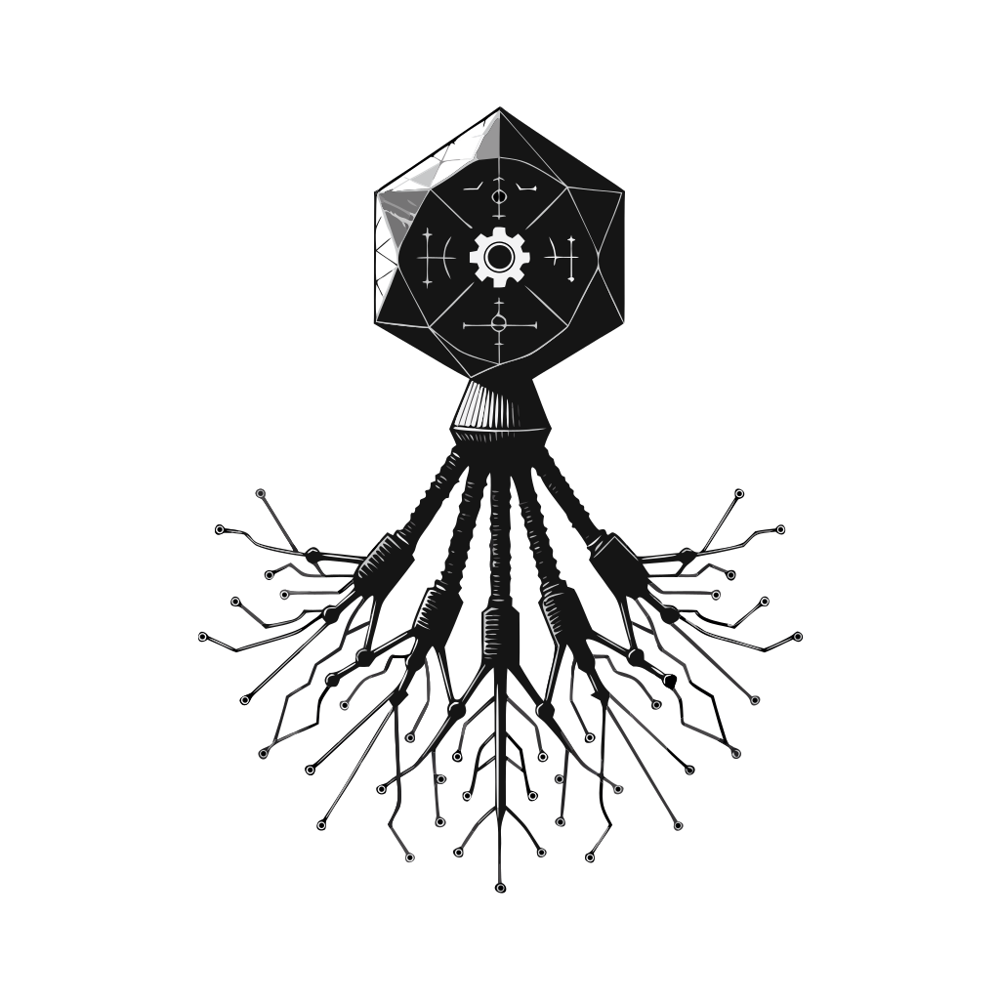

corophage
Algebraic effects for stable Rust.
Separate what your program does from how it gets done.
cargo add corophage
Testable
Swap in mock handlers for testing without touching the real world. Your business logic stays pure and easy to verify.
Composable
Attach handlers incrementally with the Program API. Partially-handled programs are first-class values you can pass around and extend.
Stable Rust
No nightly required. Built on async coroutines via fauxgen and hlists/coproducts via frunk.
Fast
~10 ns per yield. Zero-cost dispatch, the compiler monomorphizes and inlines effect dispatch into flat branches.
Define effects, write logic, attach handlers
Your program describes what to do by yielding effects.
Define your effects
Each effect is a struct annotated with #[effect(ResumeType)].
The resume type defines what the handler sends back.
use corophage::prelude::*;
#[effect(())]
struct Log<'a>(&'a str);
#[effect(String)]
struct Read(String);
#[effect(Never)]
struct Cancel;
type Effs = Effects![Cancel, Log<'static>, Read];Describe what to do
Use #[effectful] to write effectful functions with yield_!().
Your program doesn't know or care how effects are handled.
#[effectful(Cancel, Log<'static>, Read)]
fn program() -> usize {
yield_!(Log("Starting..."));
let data = yield_!(Read("config.toml".into()));
data.len()
}Now decide how to handle each effect.
Run with plain closures as handlers.
let result = program()
.handle(|_: Cancel| Control::cancel())
.handle(|Log(msg)| {
println!("{msg}");
Control::resume(())
})
.handle(|Read(path)| {
Control::resume(std::fs::read_to_string(path).unwrap())
})
.run_sync();
assert_eq!(result, Ok(42));Use async closures and .await real I/O.
let result = program()
.handle(async |_: Cancel| Control::cancel())
.handle(async |Log(msg)| {
println!("{msg}");
Control::resume(())
})
.handle(async |Read(path)| {
let data = tokio::fs::read_to_string(path).await.unwrap();
Control::resume(data)
})
.run().await;
assert_eq!(result, Ok(42));Swap in mock handlers, test without side effects.
let result = program()
.handle(|_: Cancel| Control::cancel())
.handle(|Log(_)| Control::resume(())) // silent
.handle(|Read(_)| {
// Fake data instead of reading from disk
Control::resume("mock content!".into())
})
.run_sync();
// No filesystem access, no stdout output
assert_eq!(result, Ok(13));The effects and logic stay the same, only the handlers change.
More features
Invoke sub-programs from within a program.
Effects are forwarded automatically, the sub-program's effects just need to be a subset of the outer program's.
use corophage::prelude::*;
#[effect(&'static str)]
struct Ask(&'static str);
#[effect(())]
struct Print(String);
#[effect(())]
struct Log(&'static str);
#[effectful(Ask, Print)]
fn greet() {
let name: &str = yield_!(Ask("name?"));
yield_!(Print(format!("Hello, {name}!")));
}
#[effectful(Ask, Print, Log)]
fn main_program() {
yield_!(Log("Starting..."));
invoke!(greet());
yield_!(Log("Done!"));
}
let result = main_program()
.handle(|_: Ask| Control::resume("world"))
.handle(|Print(msg)| { println!("{msg}"); Control::resume(()) })
.handle(|_: Log| Control::resume(()))
.run_sync();
assert_eq!(result, Ok(()));Handlers can share mutable state. The state is passed as an argument to every handler.
use corophage::prelude::*;
#[effect(u64)]
struct Counter;
#[effectful(Counter)]
fn count_up() -> u64 {
let a = yield_!(Counter);
let b = yield_!(Counter);
a + b
}
let mut count: u64 = 0;
let result = count_up()
.handle(|s: &mut u64, _: Counter| {
*s += 1;
Control::resume(*s)
})
.run_sync_stateful(&mut count);
assert_eq!(result, Ok(3)); // 1 + 2
assert_eq!(count, 2); // handler was called twiceHandlers can resume computations with borrowed data, no cloning needed.
Because Effect::Resume<'r> is a GAT, handlers can return references instead of owned values.
use corophage::prelude::*;
use std::collections::HashMap;
#[effect(&'r str)]
struct Lookup<'a> {
map: &'a HashMap<String, String>,
key: &'a str,
}
// Pass borrowed data as function parameters.
// For inline use or fine-grained capture control,
// use Program::new directly instead.
#[effectful(Lookup<'a>)]
fn lookup<'a>(map: &'a HashMap<String, String>) -> String {
let host: &str = yield_!(Lookup { map, key: "host" });
let port: &str = yield_!(Lookup { map, key: "port" });
format!("{host}:{port}")
}
let map = HashMap::from([
("host".into(), "localhost".into()),
("port".into(), "5432".into()),
]);
let result = lookup(&map)
.handle(|Lookup { map, key }| {
let value = map.get(key).unwrap();
Control::resume(value.as_str())
})
.run_sync();
assert_eq!(result, Ok("localhost:5432".to_string()));Effects can borrow data from the local scope by using a non-'static lifetime.
use corophage::prelude::*;
#[effect(())]
struct Log<'a>(pub &'a str);
// Pass borrowed data as function parameters.
// For inline use or fine-grained capture control,
// use Program::new directly instead.
#[effectful(Log<'a>)]
fn greet<'a>(msg: &'a str) {
yield_!(Log(msg));
}
let msg = String::from("hello from a local string");
let result = greet(&msg)
.handle(|Log(m)| { println!("{m}"); Control::resume(()) })
.run_sync();
assert_eq!(result, Ok(()));